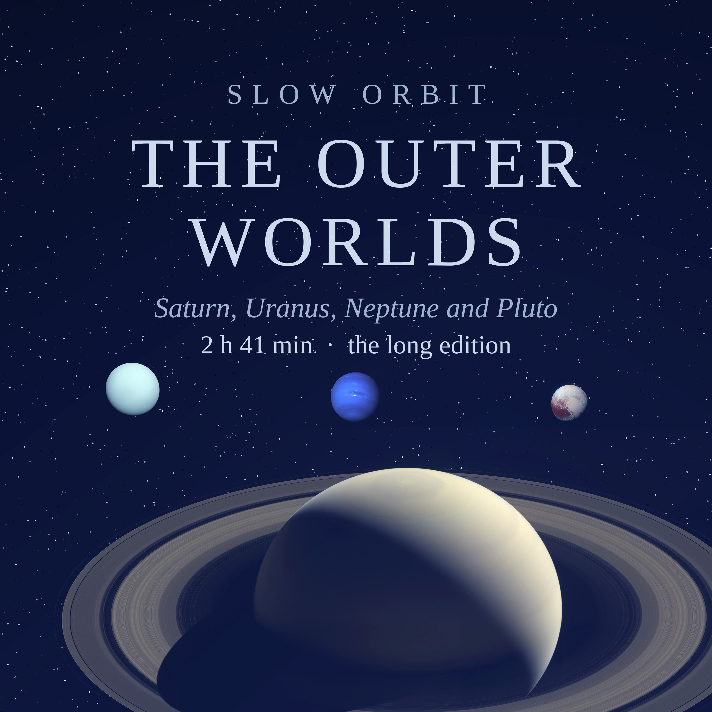

Slow Orbit · Long edition · 161 min
The Outer Worlds: the long edition
Three of our lectures joined into one long, unbroken evening: Saturn and its rings, the ice giants Uranus and Neptune, and Pluto at the edge of the light, with a few quiet words between them. Nothing new to keep up with; just one long, slow drift outward through the Solar System. Chapters: 00:00 Opening 00:32 Part one: Saturn 50:28 Part two: Uranus and Neptune, the ice giants 1:44:43 Part three: Pluto and the Kuiper Belt Pictures: NASA/JPL-Caltech/Space Science Institute (Cassini), NASA/JPL (Voyager 2), NASA/JHUAPL/SwRI (New Horizons). Read by a synthetic voice; scripts written and fact-checked by the show's team.
Also from the late hours: Embers of History · The Quiet Armoury · Myth and Score
On YouTube: Opera Stories · Slow Orbit
Free line-by-line English translations of art songs